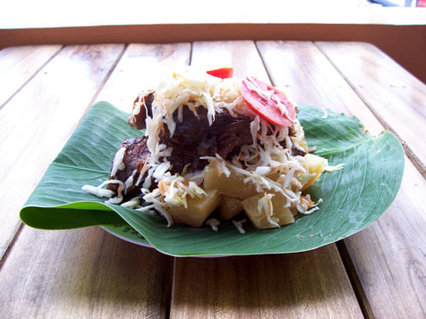
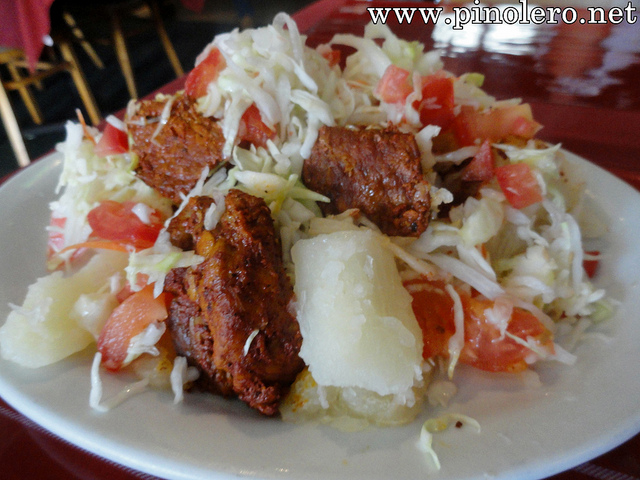
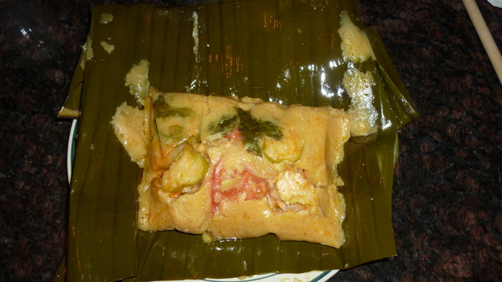

Carne en vaho
Esta elaborado a base de carne salada seca, con platano verde, platano maduro, yuca, chiltoma verde, cebolla. Se sirve en platos colocandole ensima, ensalada compuesta de: Repollo, tomate, chitoma roja y verde y vinagre de frutas.
En una oya, se pone trozos de ramas secas de guayabo, se entretejen(Forman un tapesco), luego se pone hojas de platano, se coloca la carne salada, trozos de yuca, platano verde, platano maduro y ensima rodajas de cebolla y chiltoma verde y maduro [Formando capas], todo esto se envuelve todo haciendo un "morral" y amarrado con "pitas" de cabulla. Luego se coloca en la olla que tiene el tapezco, colocandole agua hasta un cuarto de la olla, para que este hierva y se cocine con el vapor de la misma. Se tiene que estar colocandole agua constantemente hasta que la carne esté cocinada completamente a base del vapor.
El chancho con yuca
Elaborado con yuca salcochada con sal, trozitos de carne de cerdo fritos, ensalada y vinagre de frutas.
La yuca es salcochada, la carne es extraida del cerdo, la ensalada es elaborada con ingredientes de: Repollo cortado, tomate, cebolla, se le agrega vinagre de fruta y se le agrega un poco de picante según el gusto.

Nacatamales
Elaborado con masa de maíz, carne de cerdo en trozos pequeños y costillas de cerdo con tocino.
Se elabora con masa de maiz fino y masa de maiz con achiote y arroz. Se extiende la masa blanca luego en medio se le pone la masa con achiote y pequeñas porciones de arroz crudo, colocandose tambien tozos de tocinos de cerdo, costillas de cerdo y pequeños trozos de carne, se le coloca tambien rodajas de tomate, chiltima, chile picante criollo y rodaja de papas. Se envuelve en hojas de platano, luego se amarra, formando un paquete de forma rectangular, para que la masa no se vaya a salir y tambien para acelerar el cocimiento de la misma. Se colocan los nacatamales en una olla y se le agrega agua hasta cubrirlos, tapando la olla. Su tiempo de coción es de 4 a 5 horas.